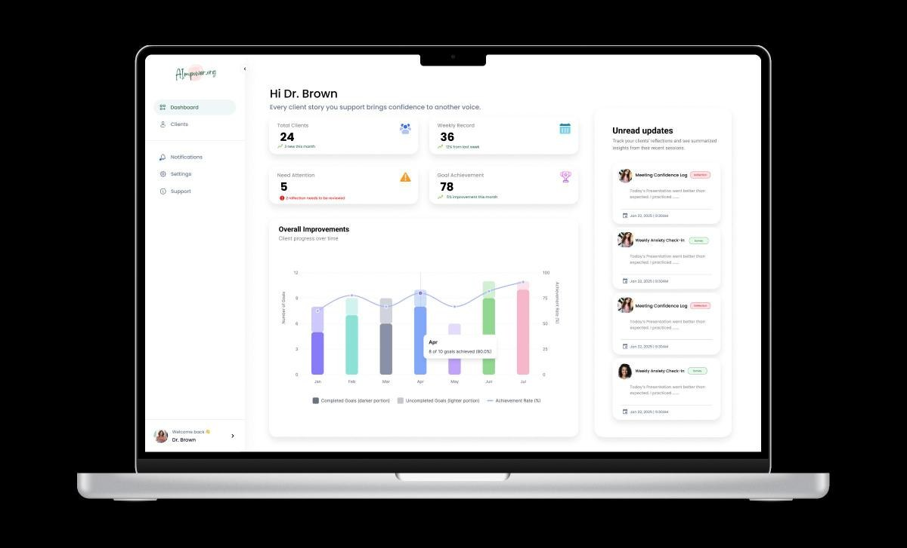
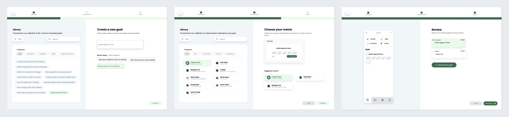
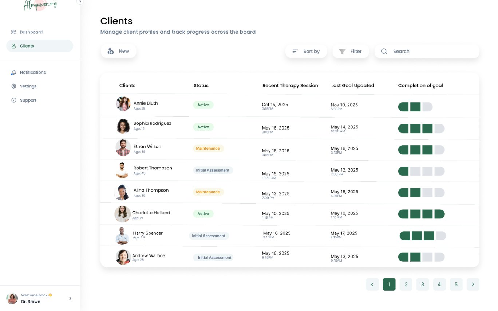
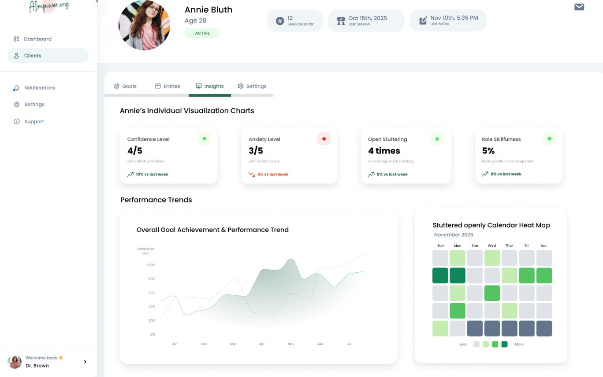
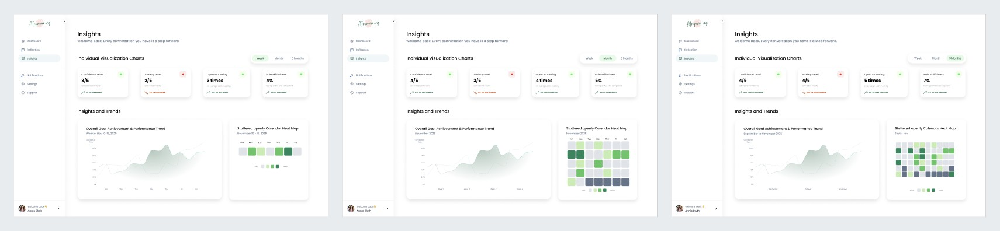

Case study · UX / product design
AImpower: a dashboard for speech-language pathologists
AImpower.org is a nonprofit building speech AI that works for people who stutter. I designed the clinician side: the web app a speech-language pathologist (SLP) uses to set goals with clients and follow their progress between sessions.

The problem
Most speech technology is trained on fluent speech, so it works worst for the people who stutter. AImpower's client tool supports people during video calls and lets them log how meetings went. Their speech-language pathologists had no place to set goals with a client or see that data between sessions.
What I designed
- SLP dashboard: caseload totals, clients who need attention, goal achievement over time, and the newest client reflections.
- Clients overview: a table of every client with status, last session, last goal update and goal completion.
- Create goal flow: three steps to set a goal, pick how it is measured, and review it before it goes to the client.
- Insights: confidence, anxiety, open stuttering and goal trends, viewable by week, month or three months.
I turned interviews and community feedback into wireframes, built the high-fidelity screens in Figma, iterated from usability findings, and prepared handoff files for developers.
Design decisions
- Open stuttering counts as progress. The goal library includes goals like "Stutter openly 5 times," and Insights maps the days a client stuttered openly on a calendar. Success means speaking with confidence, not sounding fluent.
- Start from a library, not a blank box. SLPs pick from 20+ common therapist goals sorted into emotional, cognitive, utility and speech categories, or reuse a recent goal, then edit it.
- Show the metric before choosing it. Each measurement type (progress bar, 1 to 5 rating, emoji scale, word cloud, voice note and more) shows a live preview, with suggested metrics for the goal.
- Review on the client's screen. The last step previews the goal as the client will see it on their phone, so both sides of the product are designed together.
- Zoom levels for time. Week, month and three-month views change the heat map from days to weeks, so a short dip does not hide long-term growth.



